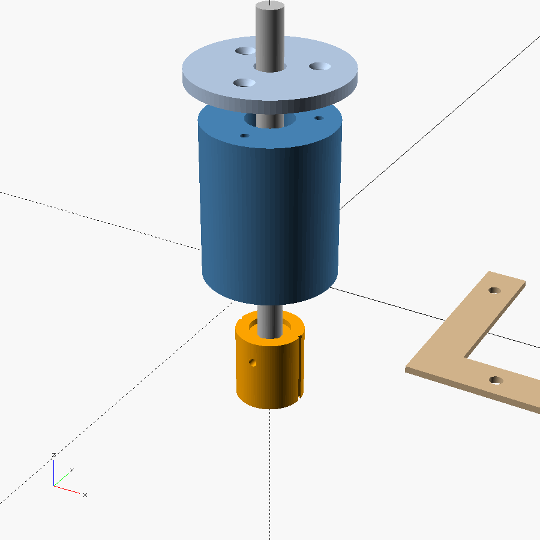

3018-PRO · GRBL · QWORK carbide wheel · swivel caster 1.5 mm
Saves as .txt. If your offline controller doesn't list it, rename to .nc.
The printed body drops into the spindle clamp where the 775 motor sits. An 8 mm steel shaft runs through two LM8UU linear bearings, so it can slide up and down and spin freely. A compression spring under the body pushes the shaft down. That spring, not the Z motor, sets the scoring pressure, so small differences in bed or glass height barely change the force.
The QWORK cutter head is unscrewed from its handle and clamped into the carrier at the bottom of the shaft, 1.5 mm off-centre. The wheel trails behind the pivot like a shopping-cart caster and steers itself around curves. The G-code generator shifts every path by that offset so the wheel lands on your line.
I couldn't confirm either size from the product listings. Measure both with calipers, enter them at the top of qikglass_scoring_head.scad, then export the STLs from free OpenSCAD. The included STLs use the defaults shown.
Take the spindle out and measure the motor body where the clamp grips it. A bare 775 is about 42 mm. If the clamp grips the steel flux ring, it's about 45.5 mm.
clamp_d = 42.0
Loosen the small screw on the handle (the kit's screwdriver fits), pull a head out, and measure the round part that sat inside the handle.
head_shank_d = 7.0
| Qty | Part | Notes |
|---|---|---|
| 2 | LM8UU linear bearing | 15 mm OD × 24 mm, for an 8 mm shaft |
| 1 | 8 mm hardened steel rod, 100 mm | Linear rod or a cut 3D-printer rod |
| 1 | 8 mm shaft collar with set screw | Stops the shaft and sets spring preload |
| 1 | Compression spring | ID 9 mm or more, OD 13 mm or less, free length 25–30 mm, wire 1.0–1.2 mm. An assortment box lets you tune. |
| 3 | M3 × 8 countersunk screw | Cap to body |
| 2 | M3 × 10 socket screw | Carrier clamps (self-tap into the plastic) |
| 1 | QWORK cutter head | The 2–6 mm head for 3 mm stained glass |
| 1 | MDF board + 2–3 mm felt or cork | Flat, slightly soft bed under the glass |
| 1 | Kitchen scale | For setting pressure |
| — | Glass cutting oil | The head alone has no reservoir |
| Part | Orientation | File |
|---|---|---|
| Body | Upright, bearing bore opening up | qikglass_body.stl |
| Cap | Flat, countersinks up | qikglass_cap.stl |
| Carrier | Head pocket down on the bed | qikglass_carrier.stl |
| Glass corner fence (×2) | Flat | qikglass_fence.stl |
PETG or PLA+, 0.2 mm layers, 4 walls, 40% infill. If the bearings are loose or won't press in, change lm_fit by 0.05 mm and reprint the body.
Never run a milling file with the glass head fitted. Router files dive several millimetres deep and will crush the spring and break glass. Keep glass files in their own folder on the SD card.

The 3018's Z motor can push well past this, but its frame flexes. If lines wander under load, add spring preload rather than more depth.
Lay a strip of paper on the glass under the wheel and jog down until the paper is just pinched. Set Z0 there. The program then drives to Z −(score depth) and the spring supplies the force.
M0. If your offline controller ignores M0, run from a PC with Candle or UGS instead.M5 and never turn the spindle on, but keep it unplugged anyway.